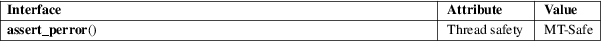

assert_perror − test errnum and abort
Standard C library (libc, −lc)
#define
_GNU_SOURCE /* See feature_test_macros(7) */
#include <assert.h>
void assert_perror(int errnum);
If the macro NDEBUG was defined at the moment <assert.h> was last included, the macro assert_perror() generates no code, and hence does nothing at all. Otherwise, the macro assert_perror() prints an error message to standard error and terminates the program by calling abort(3) if errnum is nonzero. The message contains the filename, function name and line number of the macro call, and the output of strerror(errnum).
No value is returned.
For an explanation of the terms used in this section, see attributes(7).

GNU.
The purpose of the assert macros is to help programmers find bugs in their programs, things that cannot happen unless there was a coding mistake. However, with system or library calls the situation is rather different, and error returns can happen, and will happen, and should be tested for. Not by an assert, where the test goes away when NDEBUG is defined, but by proper error handling code. Never use this macro.
abort(3), assert(3), exit(3), strerror(3)